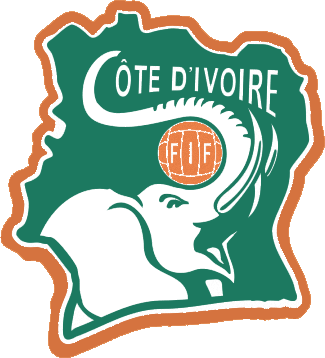
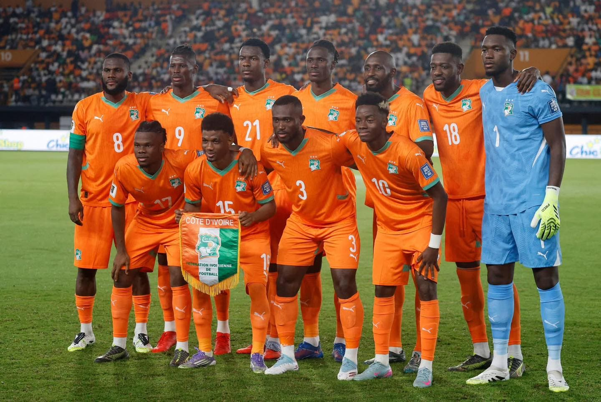
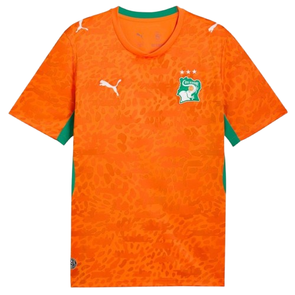
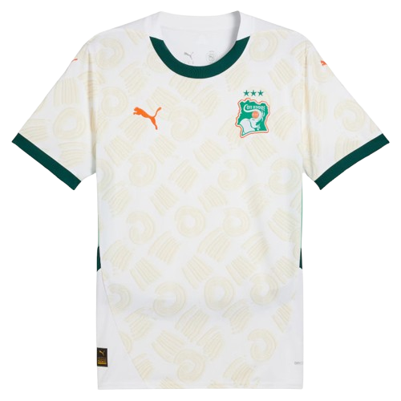

Selección
Costa de Marfil
Resumen
Costa de Marfil es una selección con gran historia africana y jugadores muy rápidos, conocida por su camiseta naranja brillante.

- Apodo: Las Elefantas
- Primer Mundial: 2006
- Colores: naranja, blanco y verde
- Mejor logro: semifinales de la Copa Africana de Naciones
Historia
Costa de Marfil ha sido una selección importante en África, conocida por su talento ofensivo y su trayecto en competiciones como la Copa Africana de Naciones y la Copa del Mundo.

Jugadores
Algunos de los jugadores más representativos de la selección de Costa de Marfil son:
- André Onana (portero)
- Sébastien Haller (delantero)
- Nicolas Pépé (extremo)
- Franck Kessié (mediocampista)
- Serge Aurier (defensa)
- Simon Adingra (delantero)
Indumentaria
El uniforme de la selección de Costa de Marfil utiliza colores naranja, blanco y verde, inspirados en la bandera nacional y en la energía del equipo.

